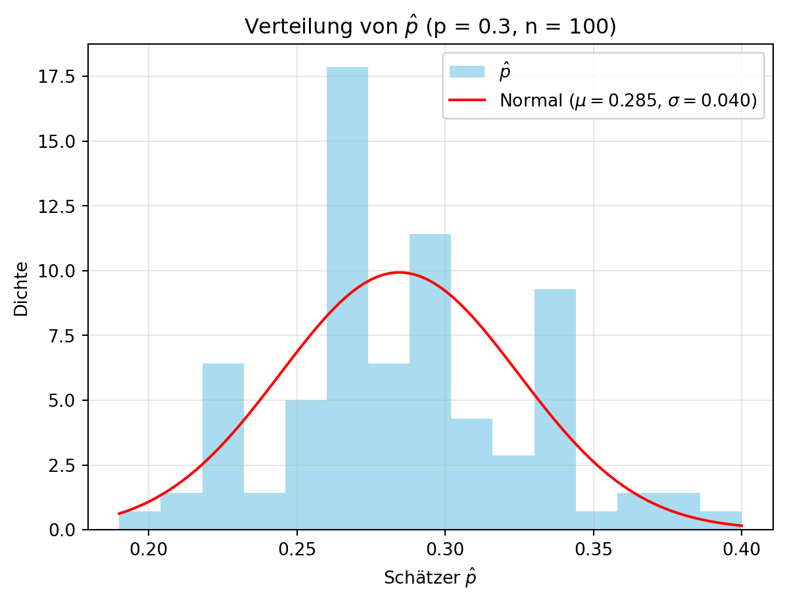
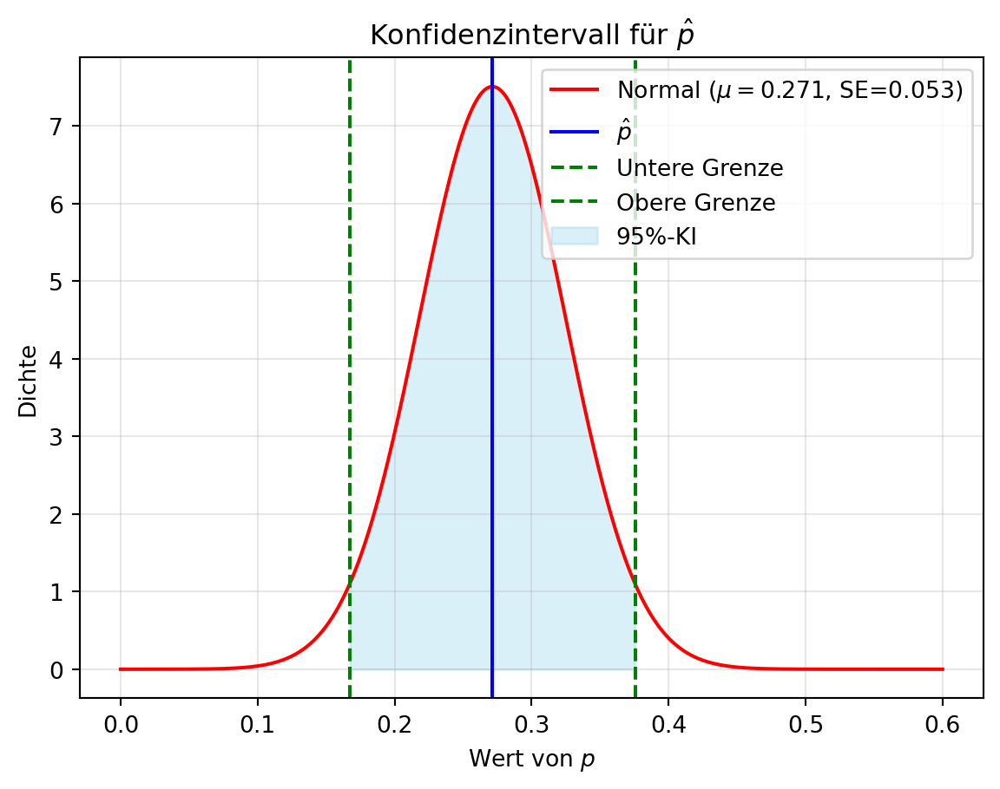
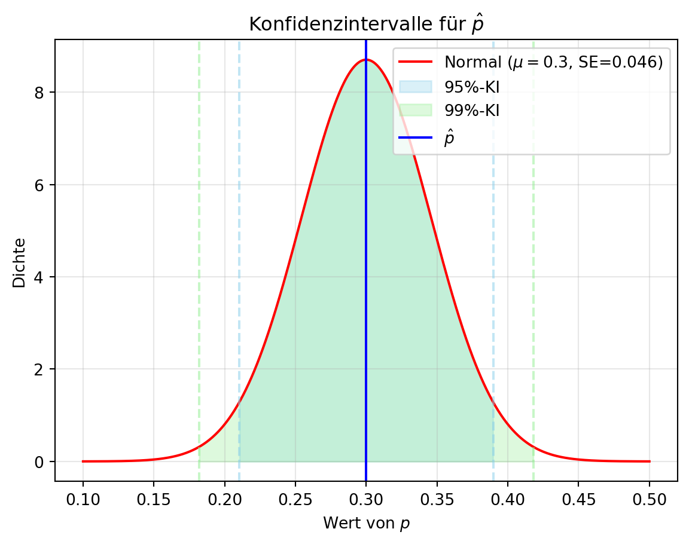
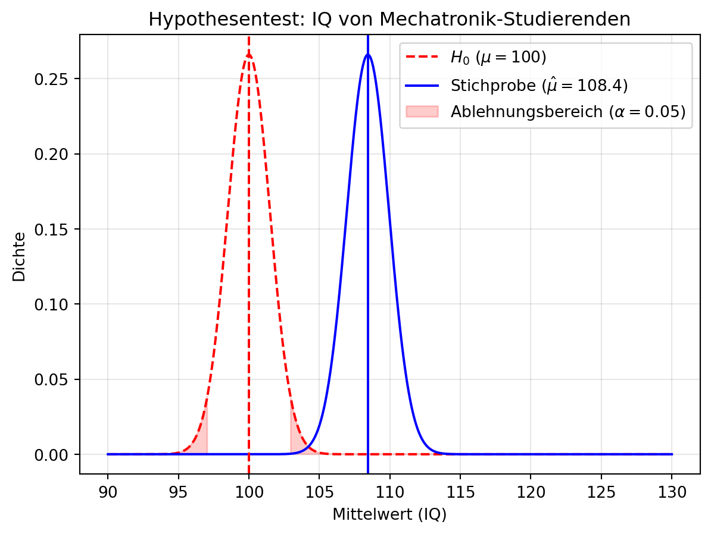

graph LR
U[Person] -->|0.001| A[Krebs]
U[Person] -->|0.999| D[Kein Krebs]
A[Krebs] -->|0.99| B[Positiv]
A[Krebs] -->|0.01| C[Negativ]
D[Kein Krebs] -->|0.05| E[Positiv]
D[Kein Krebs] -->|0.95| F[Negativ]
5 Interferenz
Inferenz (statistische Schlussfolgerung) befasst sich damit, was wir mit ausreichender Sicherheit über eine Population aussagen können, wenn nur eine Stichprobe vorliegt. Beispiele sind: Weicht ein Parameter (z. B. Mittelwert) signifikant von einem Wert ab? Unterscheiden sich die Mittelwerte zweier Verteilungen signifikant? Der zentrale Grenzwertsatz ist hier ein Schlüsselwerkzeug.

Vorsicht vor P-Hacking: Daten so lange manipulieren, bis ein „signifikantes“ Ergebnis herauskommt, ist keine Inferenz, sondern Fehlinterpretation!
5.1 Punktschätzer und Konfidenzintervalle
Ein Punktschätzer ist eine Funktion, die einen Parameter einer Verteilung (z. B. Mittelwert, Varianz) aus einer Stichprobe schätzt. Da die wahre Verteilung der Population unbekannt ist, ziehen wir Rückschlüsse aus den Daten. Der zentrale Grenzwertsatz hilft, die Verteilung dieser Schätzer zu verstehen.
5.1.1 Beispiel: Bernoulli-Verteilung
Betrachten wir eine Zufallsvariable \(X \sim \text{Bernoulli}(p)\) mit unbekanntem Parameter \(p\). Ein naheliegender Schätzer für \(p\) ist der Anteil der Einsen in einer Stichprobe, \(\hat{p}\), berechnet als:
\[\hat{p} = \frac{1}{n} \sum_{i=1}^n X_i,\]
wobei \(n\) die Stichprobengröße ist und \(X_i\) die Beobachtungen (0 oder 1). Dies ist zudem der Mittelwert der Stichprobe, wenn wir Erfolge als 1 und Misserfolge als 0 kodieren.
Maximum-Likelihood-Schätzung (MLE)
Um \(\hat{p}\) systematisch zu bestimmen, nutzen wir die Maximum-Likelihood-Schätzung:
1. Likelihood-Funktion: Für \(n\) unabhängige Bernoulli-Variablen \(X_1, \ldots, X_n\) mit \(k = \sum_{i=1}^n X_i\) Einsen lautet die Likelihood:
\[L(p) = p^k (1-p)^{n-k}.\]
2. Log-Likelihood: Der Logarithmus vereinfacht die Maximierung:
\[\log L(p) = k \log p + (n - k) \log (1 - p).\]
3. Maximierung: Ableitung nach \(p\) und Nullsetzen:
\[\frac{d}{dp} \log L(p) = \frac{k}{p} - \frac{n - k}{1 - p} = 0.\]
Lösung: \(k(1 - p) = p(n - k)\), also \(\hat{p} = \frac{k}{n}\).
Fazit: Der MLE-Schätzer \(\hat{p}\) ist der Stichprobenanteil, da er die beobachteten Daten am wahrscheinlichsten macht.
Zentraler Grenzwertsatz für Schätzer
Bei großer Stichprobengröße \(n\) und unabhängigen, identisch verteilten (i.i.d.) Ziehungen ist \(\hat{p}\) annähernd normalverteilt:
\[\hat{p} \sim \mathcal{N}\left(p, \frac{p(1-p)}{n}\right),\]
wobei:
- \(\mu_{\hat{p}} = p\) (erwartungstreu, d. h., im Mittel korrekt), ergibt sich aus der Maximum-Likelihood-Schätzung,
- \(\sigma_{\hat{p}} = \sqrt{\frac{p(1-p)}{n}}\) (Standardfehler, SE).
Voraussetzung: \(np \geq 10\) und \(n(1-p) \geq 10\), damit die Normalapproximation gilt.
Herleitung der Varianz
Die Varianz einer Zufallsvariablen \(X\) ist definiert als:
\[ \text{Var}(X) = \mathbb{E}[(X - \mathbb{E}[X])^2] \]
Dies beschreibt, wie weit die Werte der Zufallsvariablen \(X\) im Durchschnitt von ihrem Erwartungswert \(\mathbb{E}[X]\) abweichen.
Rechenregeln für die Varianz
Varianz einer konstanten Zahl:
Für eine Konstante \(c\) gilt:
\[ \text{Var}(c) = 0 \]Varianz einer linearen Kombination von Zufallsvariablen:
Wenn \(X\) und \(Y\) zwei Zufallsvariablen sind und \(a, b\) Konstanten, dann gilt: \[ \text{Var}(aX + bY) = a^2 \text{Var}(X) + b^2 \text{Var}(Y) + 2ab \, \text{Cov}(X, Y) \]Wenn \(X\) und \(Y\) unabhängig sind, fällt der Kovarianzterm weg, sodass: \[ \text{Var}(aX + bY) = a^2 \text{Var}(X) + b^2 \text{Var}(Y) \]
Herleitung der Varianz für den Fall von \(\hat{p}\)
Sei \(X_1, X_2, \dots, X_n\) eine Stichprobe von unabhängigen Zufallsvariablen, wobei jede \(X_i\) der Bernoulli-Verteilung mit Erfolgswahrscheinlichkeit \(p\) folgt. Der Mittelwert der Stichprobe \(\hat{p}\) ist:
\[ \hat{p} = \frac{1}{n} \sum_{i=1}^{n} X_i \]
Da die \(X_i\) unabhängig sind, gilt für die Varianz von \(\hat{p}\) die Rechenregel für die Varianz der Summe unabhängiger Zufallsvariablen:
\[ \text{Var}(\hat{p}) = \text{Var}\left( \frac{1}{n} \sum_{i=1}^{n} X_i \right) \]
Da die \(X_i\) identisch verteilt sind, haben sie die gleiche Varianz \(\text{Var}(X_i) = p(1 - p)\). Es folgt:
\[ \text{Var}(\hat{p}) = \frac{1}{n^2} \sum_{i=1}^{n} \text{Var}(X_i) = \frac{1}{n^2} \cdot n \cdot p(1 - p) = \frac{p(1 - p)}{n} \]
Damit haben wir die Formel für die Varianz von \(\hat{p}\):
\[ \text{Var}(\hat{p}) = \frac{p(1 - p)}{n} \]
Diese Varianz beschreibt, wie stark der geschätzte Anteil \(\hat{p}\) von der tatsächlichen Erfolgswahrscheinlichkeit \(p\) abweichen kann.
5.1.2 Simulation: Schätzer-Verteilung
Wir illustrieren dies mit einer Grundgesamtheit \(X \sim \text{Bernoulli}(0.3)\), ziehen \(N = 1000\) Werte, nehmen Stichproben der Größe \(n = 100\) und wiederholen dies \(m = 100\) Mal. Der Schätzer \(\hat{p}\) wird als Anteil der Einsen berechnet. Figure 5.1 zeigt die Verteilung von \(\hat{p}\).
import numpy as np
import matplotlib.pyplot as plt
from scipy.stats import norm
np.random.seed(42)
p = 0.3 # Wahrer Parameter
N = 1000 # Grundgesamtheit
n = 100 # Stichprobengröße
m = 100 # Anzahl der Wiederholungen
results = np.zeros(m)
population = np.random.binomial(1, p, N) # Grundgesamtheit einmal ziehen
for i in range(m):
sample = np.random.choice(population, n, replace=False) # Stichprobe ohne Zurücklegen
results[i] = np.mean(sample) # Schätzer \hat{p}
# Plot
plt.hist(results, bins=15, density=True, color='skyblue', alpha=0.7, label='$\hat{p}$')
mu, sigma = norm.fit(results)
x = np.linspace(min(results), max(results), 100)
y = norm.pdf(x, mu, sigma)
plt.plot(x, y, 'r-', label=f'Normal ($\mu={mu:.3f}$, $\sigma={sigma:.3f}$)')
plt.xlabel('Schätzer $\hat{p}$')
plt.ylabel('Dichte')
plt.title(f'Verteilung von $\hat{{p}}$ (p = {p}, n = {n})')
plt.legend()
plt.grid(alpha=0.3)
plt.show()
print(f'Mittelwert von $\hat{{p}}$: {np.mean(results):.3f}')
print(f'Standardfehler von $\hat{{p}}$: {np.std(results):.3f}')
print(f'Theoretischer SE: {np.sqrt(p * (1 - p) / n):.3f}')<>:19: SyntaxWarning:
invalid escape sequence '\h'
<>:23: SyntaxWarning:
invalid escape sequence '\m'
<>:23: SyntaxWarning:
invalid escape sequence '\s'
<>:24: SyntaxWarning:
invalid escape sequence '\h'
<>:26: SyntaxWarning:
invalid escape sequence '\h'
<>:31: SyntaxWarning:
invalid escape sequence '\h'
<>:32: SyntaxWarning:
invalid escape sequence '\h'
<>:19: SyntaxWarning:
invalid escape sequence '\h'
<>:23: SyntaxWarning:
invalid escape sequence '\m'
<>:23: SyntaxWarning:
invalid escape sequence '\s'
<>:24: SyntaxWarning:
invalid escape sequence '\h'
<>:26: SyntaxWarning:
invalid escape sequence '\h'
<>:31: SyntaxWarning:
invalid escape sequence '\h'
<>:32: SyntaxWarning:
invalid escape sequence '\h'
/tmp/ipykernel_3313/4128398071.py:19: SyntaxWarning:
invalid escape sequence '\h'
/tmp/ipykernel_3313/4128398071.py:23: SyntaxWarning:
invalid escape sequence '\m'
/tmp/ipykernel_3313/4128398071.py:23: SyntaxWarning:
invalid escape sequence '\s'
/tmp/ipykernel_3313/4128398071.py:24: SyntaxWarning:
invalid escape sequence '\h'
/tmp/ipykernel_3313/4128398071.py:26: SyntaxWarning:
invalid escape sequence '\h'
/tmp/ipykernel_3313/4128398071.py:31: SyntaxWarning:
invalid escape sequence '\h'
/tmp/ipykernel_3313/4128398071.py:32: SyntaxWarning:
invalid escape sequence '\h'

Mittelwert von $\hat{p}$: 0.285
Standardfehler von $\hat{p}$: 0.040
Theoretischer SE: 0.046Die simulierten Werte für \(\hat{p}\) stimmen gut mit den theoretischen Erwartungen überein:
- \(\mu_{\hat{p}} = p = 0.3\),
- \(\text{SE}_{\hat{p}} = \sigma_{\hat{p}} = \sqrt{\frac{p(1-p)}{n}} = \sqrt{\frac{0.3 \cdot 0.7}{100}} \approx 0.046.\)
Dies bestätigt die Normalapproximation durch den zentralen Grenzwertsatz.
5.1.3 Konfidenzintervalle
Ein Konfidenzintervall (KI) gibt ein Intervall an, das den wahren Wert eines Parameters mit einer bestimmten Wahrscheinlichkeit (dem Konfidenzniveau \(1-\alpha\)) enthält. Bei einer Normalverteilung liegen etwa 95 % der Werte innerhalb von zwei Standardabweichungen. Dies haben wir z.B. bei der Betrachung von IQ-Werten gesehen, dort liegen 95 % der Werte innerhalb von zwei Standardabweichungen (\(2 \sigma = 2 \cdot 15\)) um den Mittelwert (\(\mu = 100\)).
Definition eines Konfidenzintervalls
Für einen Schätzer \(\hat{\theta}\) eines Parameters \(\theta\) ist das Konfidenzintervall \(\text{CI}_{1-\alpha}\):
\[\left(\hat{\theta} - z_{\alpha/2} \cdot \frac{\sigma}{\sqrt{n}}, \hat{\theta} + z_{\alpha/2} \cdot \frac{\sigma}{\sqrt{n}}\right),\]
wobei:
- \(\hat{\theta}\) der Punktschätzer (z. B. Stichprobenmittelwert),
- \(\sigma\) die Standardabweichung der Grundgesamtheit,
- \(n\) die Stichprobengröße,
- \(z_{\alpha/2}\) das \(\alpha/2\)-Quantil der Standardnormalverteilung.
Falls \(\sigma\) unbekannt ist, wird die Stichprobenstandardabweichung \(s\) verwendet:
\[\text{SE} = \frac{s}{\sqrt{n}}.\]
Herleitung des Intervalls
- Standardisierung: Für eine normalverteilte Zufallsvariable \(\hat{\theta} \sim \mathcal{N}(\theta, \sigma^2/n)\) wird \(\frac{\hat{\theta} - \theta}{\sigma/\sqrt{n}} \sim \mathcal{N}(0, 1)\).
- Konfidenzniveau: Für \(1-\alpha = 0.95\) liegt 95 % der Fläche zwischen \(-z_{\alpha/2}\) und \(z_{\alpha/2}\). Bei \(\alpha = 0.05\) ist \(z_{\alpha/2} = 1.96\) (da \(P(Z \leq 1.96) \approx 0.975\)).
- Intervall: Umstellen ergibt: \(P\left(\hat{\theta} - z_{\alpha/2} \cdot \frac{\sigma}{\sqrt{n}} \leq \theta \leq \hat{\theta} + z_{\alpha/2} \cdot \frac{\sigma}{\sqrt{n}}\right) = 1-\alpha\).
5.1.4 Beispiel: Konfidenzintervall für \(p\)
Für unsere Bernoulli-Verteilung ist \(\hat{p}\) normalverteilt mit \(\mu_{\hat{p}} = p\) und Standardfehler \(\text{SE}_{\hat{p}} = \sqrt{\frac{p(1-p)}{n}}.\) Da \(p\) unbekannt ist, nutzen wir \(\hat{p}\) zur Schätzung:
\[\text{CI}_{0.95} = \left(\hat{p} - z_{\alpha/2} \cdot \sqrt{\frac{\hat{p}(1-\hat{p})}{n}}, \hat{p} + z_{\alpha/2} \cdot \sqrt{\frac{\hat{p}(1-\hat{p})}{n}}\right).\]
Für ein 95 %-Konfidenzniveau (\(\alpha = 0.05\)) ist \(z_{\alpha/2} = 1.96\), was wir aus Tabellen oder mit norm.ppf berechnen können.
import numpy as np
import matplotlib.pyplot as plt
from scipy.stats import norm
np.random.seed(42)
p = 0.3
n = 70
sample = np.random.binomial(1, p, n) # Eine Stichprobe
p_hat = np.mean(sample) # Schätzer
# Konfidenzintervall
alpha = 0.05
z = norm.ppf(1 - alpha/2) # z-Wert für 95%
se = np.sqrt(p_hat * (1 - p_hat) / n) # Standardfehler mit \hat{p}
ci_lower = p_hat - z * se
ci_upper = p_hat + z * se
print(f'z_{{alpha/2}}: {z:.2f}')
print(f'\hat{{p}}: {p_hat:.3f}')
print(f'95%-Konfidenzintervall: [{ci_lower:.3f}, {ci_upper:.3f}]')
# Visualisierung
x = np.linspace(0, 0.6, 1000)
y = norm.pdf(x, p_hat, se)
plt.plot(x, y, 'r-', label=f'Normal ($\mu={p_hat:.3f}$, SE={se:.3f})')
plt.axvline(p_hat, color='blue', linestyle='-', label='$\hat{p}$')
plt.axvline(ci_lower, color='green', linestyle='--', label='Untere Grenze')
plt.axvline(ci_upper, color='green', linestyle='--', label='Obere Grenze')
plt.fill_between(x, y, where=(x >= ci_lower) & (x <= ci_upper), color='skyblue', alpha=0.3, label='95%-KI')
plt.xlabel('Wert von $p$')
plt.ylabel('Dichte')
plt.title('Konfidenzintervall für $\hat{p}$')
plt.legend()
plt.grid(alpha=0.3)
plt.show()z_{alpha/2}: 1.96
\hat{p}: 0.271
95%-Konfidenzintervall: [0.167, 0.376]<>:19: SyntaxWarning:
invalid escape sequence '\h'
<>:25: SyntaxWarning:
invalid escape sequence '\m'
<>:26: SyntaxWarning:
invalid escape sequence '\h'
<>:32: SyntaxWarning:
invalid escape sequence '\h'
<>:19: SyntaxWarning:
invalid escape sequence '\h'
<>:25: SyntaxWarning:
invalid escape sequence '\m'
<>:26: SyntaxWarning:
invalid escape sequence '\h'
<>:32: SyntaxWarning:
invalid escape sequence '\h'
/tmp/ipykernel_3313/1564904913.py:19: SyntaxWarning:
invalid escape sequence '\h'
/tmp/ipykernel_3313/1564904913.py:25: SyntaxWarning:
invalid escape sequence '\m'
/tmp/ipykernel_3313/1564904913.py:26: SyntaxWarning:
invalid escape sequence '\h'
/tmp/ipykernel_3313/1564904913.py:32: SyntaxWarning:
invalid escape sequence '\h'

Für unser Beispiel mit \(\hat{p} = 0.3\), \(n = 70\) und einem 95 %-Konfidenzniveau (\(\alpha = 0.05\), \(z_{\alpha/2} = 1.96\)) ergibt sich das Konfidenzintervall:
\[\left(0.271 - 1.96 \cdot \sqrt{\frac{0.271 \cdot 0.729}{70}}, 0.271 + 1.96 \cdot \sqrt{\frac{0.271 \cdot 0.729}{70}}\right) \approx (0.167, 0.376).\]
Das bedeutet, wir sind zu 95 % sicher, dass der wahre Wert von \(p\) zwischen 0.167 und 0.376 liegt.
Fragen zur Anpassung
- Welchen Faktor können wir ändern, um das Konfidenzintervall zu verkleinern?
- Wie sieht das Konfidenzintervall für ein 99 %-Niveau aus?
Lösung
- Verkleinerung des Intervalls: Die Breite des Konfidenzintervalls hängt von \(\frac{\sigma}{\sqrt{n}}\) ab. Eine größere Stichprobengröße \(n\) reduziert den Standardfehler \(\sqrt{\frac{p(1-p)}{n}}\), wodurch das Intervall schmaler wird.
- 99 %-Konfidenzniveau: Bei \(\alpha = 0.01\) ist \(z_{\alpha/2} = 2.58\) (da \(P(Z \leq 2.58) \approx 0.995\)). Das Intervall wird:
\[\left(0.271 - 2.58 \cdot \sqrt{\frac{0.271 \cdot 0.729}{70}}, 0.271 + 2.58 \cdot \sqrt{\frac{0.271 \cdot 0.729}{70}}\right) \approx (0.134, 0.408).\]
Ein höheres Konfidenzniveau verbreitert das Intervall, da mehr Sicherheit gefordert wird.
5.1.5 Darstellung des Konfidenzintervalls
Figure 5.3 zeigt die Konfidenzintervalle für \(p\) bei 95 % und 99 % Konfidenzniveau, basierend auf \(\hat{p} = 0.3\) und \(n = 100\). Dies verdeutlicht, wie sich das Intervall mit dem Konfidenzniveau ändert – ein nützliches Konzept, um Unsicherheiten in Simulationen wie im Tutorial zu quantifizieren.
import numpy as np
import matplotlib.pyplot as plt
from scipy.stats import norm
# Parameter
mu = 0.3 # \hat{p}
sigma = np.sqrt(mu * (1 - mu) / 100) # SE
alphas = [0.05, 0.01] # 95% und 99% Konfidenzniveau
colors = ['skyblue', 'lightgreen']
# Normalverteilung
x = np.linspace(0.1, 0.5, 1000)
y = norm.pdf(x, mu, sigma)
plt.plot(x, y, 'r-', label=f'Normal ($\mu={mu}$, SE={sigma:.3f})')
# Konfidenzintervalle
for i, alpha in enumerate(alphas):
z = norm.ppf(1 - alpha/2)
lower = mu - z * sigma
upper = mu + z * sigma
print(f'Konfidenzintervall für {int((1-alpha)*100)}%: ({lower:.2f}, {upper:.2f})')
plt.fill_between(x, y, where=(x >= lower) & (x <= upper), color=colors[i], alpha=0.3, label=f'{int((1-alpha)*100)}%-KI')
plt.axvline(lower, color=colors[i], linestyle='--', alpha=0.5)
plt.axvline(upper, color=colors[i], linestyle='--', alpha=0.5)
plt.axvline(mu, color='blue', linestyle='-', label='$\hat{p}$')
plt.xlabel('Wert von $p$')
plt.ylabel('Dichte')
plt.title('Konfidenzintervalle für $\hat{p}$')
plt.legend()
plt.grid(alpha=0.3)
plt.show()Konfidenzintervall für 95%: (0.21, 0.39)
Konfidenzintervall für 99%: (0.18, 0.42)<>:14: SyntaxWarning:
invalid escape sequence '\m'
<>:26: SyntaxWarning:
invalid escape sequence '\h'
<>:29: SyntaxWarning:
invalid escape sequence '\h'
<>:14: SyntaxWarning:
invalid escape sequence '\m'
<>:26: SyntaxWarning:
invalid escape sequence '\h'
<>:29: SyntaxWarning:
invalid escape sequence '\h'
/tmp/ipykernel_3313/1622860018.py:14: SyntaxWarning:
invalid escape sequence '\m'
/tmp/ipykernel_3313/1622860018.py:26: SyntaxWarning:
invalid escape sequence '\h'
/tmp/ipykernel_3313/1622860018.py:29: SyntaxWarning:
invalid escape sequence '\h'

5.1.6 Punktschätzer und Konfidenzintervalle für andere Fälle
Die Prinzipien für Schätzer und Konfidenzintervalle lassen sich auf andere Verteilungen und Parameter (z. B. Mittelwert, Varianz) übertragen. Entscheidend ist, die Verteilung des Schätzers zu kennen und entsprechende Formeln anzuwenden.
5.2 Hypothesentests
Ein Hypothesentest ist ein Verfahren, um auf Basis einer Stichprobe zu entscheiden, ob eine Hypothese über eine Population verworfen wird. Wir stellen eine Nullhypothese \(H_0\) auf (z. B. „ein Parameter hat einen bestimmten Wert“), die wir widerlegen wollen, und eine Alternativhypothese \(H_1\), die wir unterstützen möchten.
Dialektik und Falsifikationismus
Dieser Ansatz mag ungewohnt erscheinen: Warum etwas aufstellen, um es zu widerlegen? Er wurzelt in der wissenschaftlichen Methode:
- Dialektik: Eine These wird durch eine Antithese geprüft, die Synthese führt näher zur Wahrheit (Wikipedia: Dialektik).
- Falsifikationismus: Karl Popper betonte, dass Thesen nicht beweisbar, sondern nur widerlegbar sind. Eine nicht widerlegte Hypothese bleibt vorläufig gültig, ist aber nicht endgültig bewiesen (Wikipedia: Falsifikationismus).
In der Statistik nutzen wir diesen Ansatz, um Hypothesen systematisch zu prüfen.
5.2.1 Ablauf eines Hypothesentests
- Hypothesen formulieren: \(H_0\) (zu widerlegen) und \(H_1\) (zu unterstützen).
- Signifikanzniveau wählen: \(\alpha\) ist die Wahrscheinlichkeit, \(H_0\) fälschlicherweise abzulehnen (z. B. 0.05).
- Teststatistik berechnen: Bestimme \(t\) und dessen Verteilung unter \(H_0\).
- Entscheidung treffen: Vergleiche \(t\) mit einem kritischen Wert oder berechne einen p-Wert.
5.2.2 Entscheidungsfehler
Betrachten wir ein Beispiel: Ein medizinischer Test soll Krebs erkennen. Die Realität (Krebs oder kein Krebs) und das Testergebnis (positiv oder negativ) können abweichen. Das Diagramm zeigt die Wahrscheinlichkeiten:
Ziel: Personen mit Krebs identifizieren. Der schlimmste Fall wäre, Krebs zu übersehen. Wir möchten daher die Wahrscheinlichkeit maximieren, Krebs korrekt zu erkennen.
Daraus folgt:
- Nullhypothese \(H_0\): „Die Person hat keinen Krebs“ (zu widerlegen),
- Alternativhypothese \(H_1\): „Die Person hat Krebs“ (zu unterstützen).
Bei einem Hypothesentest können zwei Fehler auftreten:
- Typ-I-Fehler (\(\alpha\)): \(H_0\) wird abgelehnt, obwohl sie wahr ist (falsch positiv, z. B. „Krebs“ trotz „kein Krebs“).
- Typ-II-Fehler (\(\beta\)): \(H_0\) wird beibehalten, obwohl sie falsch ist (falsch negativ, z. B. „kein Krebs“ trotz „Krebs“).
| Entscheidung über die Nullhypothese | Nullhypothese (H0) ist | ||
| Wahr | Falsch | ||
| Entscheidung über die Nullhypothese (H0) |
Nicht verwerfen | Korrekte Entscheidung (wahr negativ, wirklich gesund) (Wahrscheinlichkeit = 1-α) |
Typ-II-Fehler (falsch negativ, hat eigentlich Krebs) (Wahrscheinlichkeit = β) |
| Verwerfen | Typ-I-Fehler (falsch positiv, ist eigentlich gesund) (Wahrscheinlichkeit = α) |
Korrekte Entscheidung (wahr positiv, hat wirklich Krebs) (Wahrscheinlichkeit = 1-β) |
|
Signifikanzniveau und Fehlerprioritäten
Im Beispiel ist der Typ-II-Fehler (\(\beta\)) besonders kritisch, da Krebs übersehen schwerwiegender ist als eine falsche Diagnose. Dennoch steuern wir die Ablehnung von \(H_0\) mit dem Signifikanzniveau \(\alpha\), der Wahrscheinlichkeit eines Typ-I-Fehlers (falsch positiv). \(\alpha\) wird vorab festgelegt, typischerweise 5 % (0.05) oder 1 % (0.01). Ein kleineres \(\alpha\) reduziert das Risiko, \(H_0\) fälschlich zu verwerfen (z. B. unnötige Behandlungen), erhöht aber die Chance eines Typ-II-Fehlers.
5.2.3 Beispiel: Hypothesentest für den Mittelwert einer Normalverteilung
Wir prüfen, ob Mechatronik-Studierende intelligenter sind als der Bevölkerungsdurchschnitt (IQ = 100). Angenommen, ihr IQ ist normalverteilt mit \(\mu = 110\) und \(\sigma = 15\), also \(X \sim \mathcal{N}(110, 15^2)\). Mit einer Stichprobe von \(n = 100\) Studierenden testen wir, ob ihr Mittelwert signifikant von 100 abweicht – ein Ansatz, der im Tutorial z. B. für Komponenten-Lebensdauern nützlich ist.
5.2.3.1 Hypothesen und Teststatistik
- \(H_0\): \(\mu = 100\) (kein Unterschied zum Durchschnitt),
- \(H_1\): \(\mu \neq 100\) (zweiseitiger Test, da „abweicht“ keine Richtung vorgibt).
Der Schätzer ist \(\hat{\mu} = \bar{X}\), und unter \(H_0\) gilt:
\[\bar{X} \sim \mathcal{N}\left(100, \frac{\sigma^2}{n}\right) = \mathcal{N}\left(100, \frac{15^2}{100}\right).\]
Die Teststatistik lautet:
\[z = \frac{\bar{X} - \mu_0}{\sigma / \sqrt{n}},\]
mit \(\mu_0 = 100\), \(\sigma = 15\), \(n = 100\). Bei \(\alpha = 0.05\) ist der kritische Wert \(z_{\alpha/2} = 1.96\).
5.2.3.2 Simulation und Visualisierung
Figure 5.4 zeigt die Stichprobenverteilung und die Nullhypothese.
import numpy as np
import matplotlib.pyplot as plt
from scipy.stats import norm
np.random.seed(42)
mu_true = 110 # Wahrer Mittelwert (Simulation)
sigma = 15 # Bekannte Standardabweichung
n = 100 # Stichprobengröße
mu_0 = 100 # Nullhypothese
# Stichprobe
X = np.random.normal(mu_true, sigma, n)
X_bar = np.mean(X) # Schätzer für Mittelwert
# Teststatistik
se = sigma / np.sqrt(n) # Standardfehler
z_stat = (X_bar - mu_0) / se
p_value = 2 * (1 - norm.cdf(abs(z_stat))) # Zweiseitiger p-Wert
# Plot
x = np.linspace(90, 130, 1000)
y_null = norm.pdf(x, mu_0, se) # Verteilung unter H_0
y_sample = norm.pdf(x, X_bar, se) # Verteilung der Stichprobe
plt.plot(x, y_null, 'r--', label=f'$H_0$ ($\mu={mu_0}$)')
plt.plot(x, y_sample, 'b-', label=f'Stichprobe ($\hat{{\mu}}={X_bar:.1f}$)')
plt.axvline(mu_0, color='red', linestyle='--')
plt.axvline(X_bar, color='blue', linestyle='-')
plt.fill_between(x, y_null, where=(x <= mu_0 - 1.96*se) | (x >= mu_0 + 1.96*se), color='red', alpha=0.2, label=r'Ablehnungsbereich ($\alpha=0.05$)')
plt.xlabel('Mittelwert (IQ)')
plt.ylabel('Dichte')
plt.title('Hypothesentest: IQ von Mechatronik-Studierenden')
plt.legend()
plt.grid(alpha=0.3)
plt.show()
print(f'Stichprobenmittelwert: {X_bar:.2f}')
print(f'Teststatistik z: {z_stat:.2f}')
print(f'p-Wert: {p_value:.4f}')<>:24: SyntaxWarning:
invalid escape sequence '\m'
<>:25: SyntaxWarning:
invalid escape sequence '\h'
<>:25: SyntaxWarning:
invalid escape sequence '\m'
<>:24: SyntaxWarning:
invalid escape sequence '\m'
<>:25: SyntaxWarning:
invalid escape sequence '\h'
<>:25: SyntaxWarning:
invalid escape sequence '\m'
/tmp/ipykernel_3313/1135806841.py:24: SyntaxWarning:
invalid escape sequence '\m'
/tmp/ipykernel_3313/1135806841.py:25: SyntaxWarning:
invalid escape sequence '\h'
/tmp/ipykernel_3313/1135806841.py:25: SyntaxWarning:
invalid escape sequence '\m'

Stichprobenmittelwert: 108.44
Teststatistik z: 5.63
p-Wert: 0.00005.2.3.3 Interpretation
An ?fig-sec-statistics-hypothesistests-2 sehen wir, dass der Stichprobenmittelwert \(\hat{\mu}\) deutlich über \(\mu_0 = 100\) liegt. Der grüne Bereich (95 %-Konfidenzintervall) schließt 100 nicht ein, und der p-Wert ist < 0.05. Das deutet darauf hin, dass die Wahrscheinlichkeit für \(\mu = 100\) sehr gering ist. Wir lehnen \(H_0\) ab und schließen, dass der Mittelwert der Mechatronik-Studierenden signifikant von 100 abweicht.
5.2.4 \(t\)-Verteilung
Bei großen Stichproben (\(n \geq 30\)) approximiert der zentrale Grenzwertsatz den Stichprobenmittelwert \(\bar{X}\) durch eine Normalverteilung, besonders wenn \(\sigma\) bekannt ist. Für kleine Stichproben (\(n < 30\)) oder unbekannte Varianz ist die \(t\)-Verteilung (Wikipedia: Studentsche t-Verteilung) besser geeignet, da sie die Unsicherheit der geschätzten Standardabweichung einbezieht.
Die Teststatistik der \(t\)-Verteilung ist:
\[t = \frac{\bar{X} - \mu_0}{\frac{S}{\sqrt{n}}},\]
wobei:
- \(\bar{X}\): Stichprobenmittelwert,
- \(\mu_0\): Wert unter \(H_0\),
- \(S\): Stichprobenstandardabweichung (\(S = \sqrt{\frac{1}{n-1} \sum (X_i - \bar{X})^2}\)),
- \(n\): Stichprobengröße.
Die Form der \(t\)-Verteilung hängt von den Freiheitsgraden \(df = n - 1\) ab: Bei kleinem \(n\) ist sie breiter (mehr Streuung), bei großem \(n\) nähert sie sich der Normalverteilung. Im Tutorial könnte die \(t\)-Verteilung bei kleinen Stichproben von Ausfallzeiten hilfreich sein, wenn \(\sigma\) unbekannt ist.
Herkunft der \(t\)-Verteilung
Die \(t\)-Verteilung stammt von William Sealy Gosset, einem Statistiker bei der Guinness-Brauerei. Er entwickelte sie, um die Bierqualität mit kleinen Stichproben zu prüfen, und veröffentlichte 1908 unter dem Pseudonym „Student“ (Original: Student’s t). Daher heißt sie „Student’s \(t\)-Verteilung“.